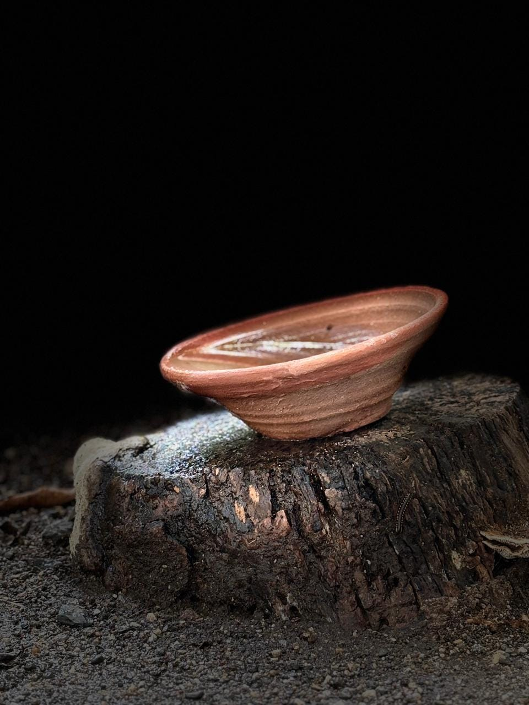
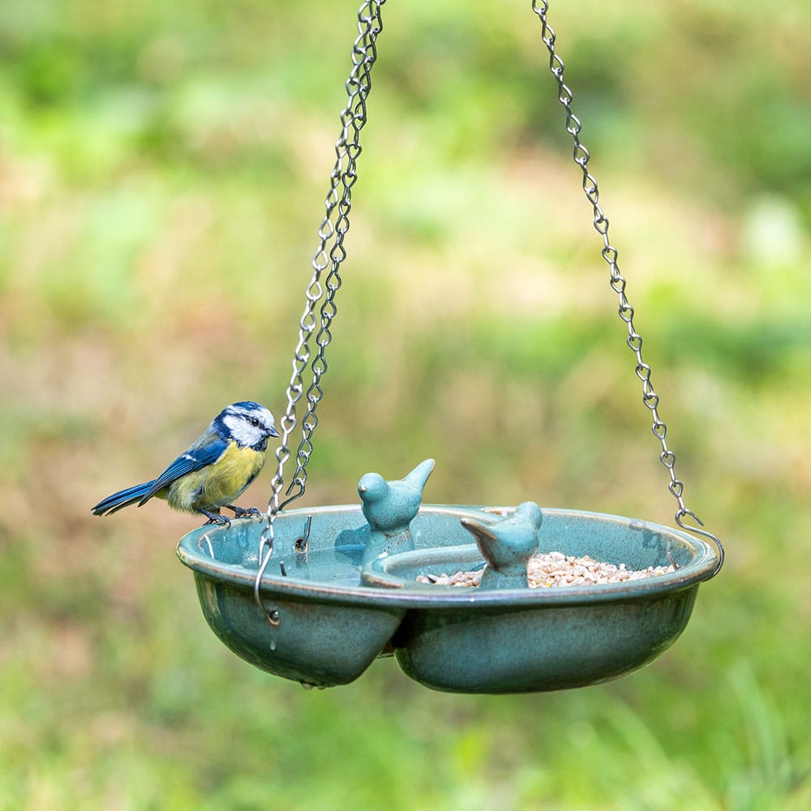
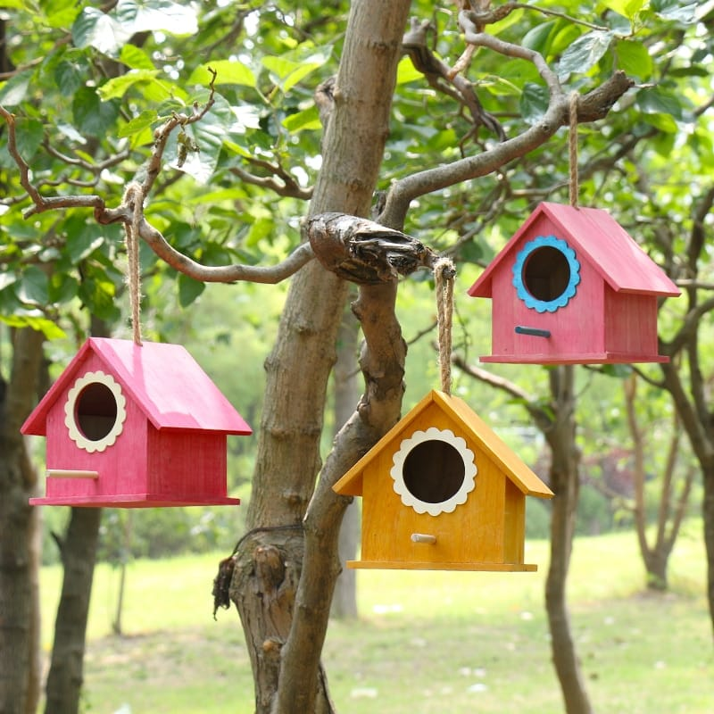
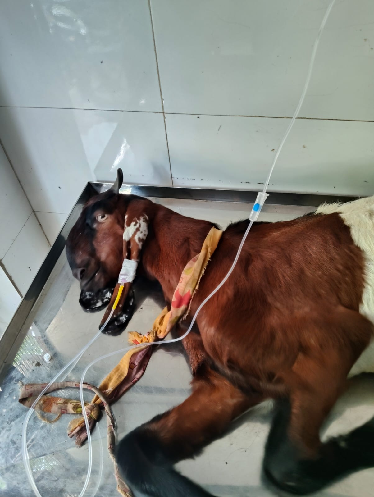

Animal welfare · Rajkot
Be a voice for the voiceless.
Join Shree Karuna Foundation Trust in supporting animal rescue, care, and rehabilitation.







Join our work
Volunteer Form
Here to Help, You Always
People who lead with care.
Shri Rameshbhai K. Thakker
Dr. M.G. Mardia
Our Review
Kind words from our community.
GOOD★★★★★Based on 396 reviews
Trustindex verifies that the original source of the review is Google.
“Great initiative and great work by foundation”Read Google reviews ↗